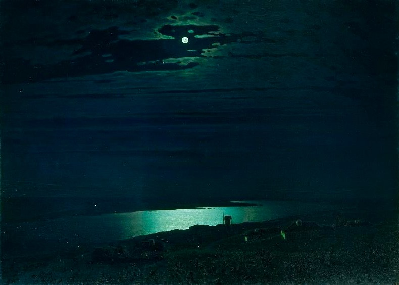

Архип Иванович Куинджи
Лунная ночь на Днепре
“Лунная ночь на Днепре” – самая известная работа Куинджи. И не удивительно.
Сам художник очень эффектно познакомил ее с публикой.
Он организовал персональную выставку. В выставочном зале было темно. Лишь одна лампа была направлена на единственную
картину выставки, “Лунную ночь на Днепре”.
Люди заворожённо смотрели на картину. Яркий зеленоватый свет луны и лунной дорожки гипнотизировал. Видны очертания
украинской деревушки. Лишь часть стен, освещённых луной, выступает из темноты. Силуэт мельницы на фоне
освещённой реки.
Эффект реалистичности и фантастичности одномоментно. Как же художник добился таких “спецэффектов”?
Помимо мастерства здесь ещё Менделеев руку приложил. Он помогал Куинджи создать состав краски, особенно мерцающей в
полумраке.
Казалось бы, удивительное качество у художника. Уметь самому распиарить свою же работу. Но он поступил неожиданно.
Почти сразу после этой выставки Куинджи 20 лет провёл затворником. Он продолжал писать, но свои картины никому не показывал.
Картина ещё до выставки была куплена великим князем Константином Константиновичем (внуком Николая I). Он так был
привязан к картине, что взял ее в кругосветное путешествие. Соленый влажный воздух способствовал потемнению полотна.
Увы, того гипнотического эффекта уже не вернуть.